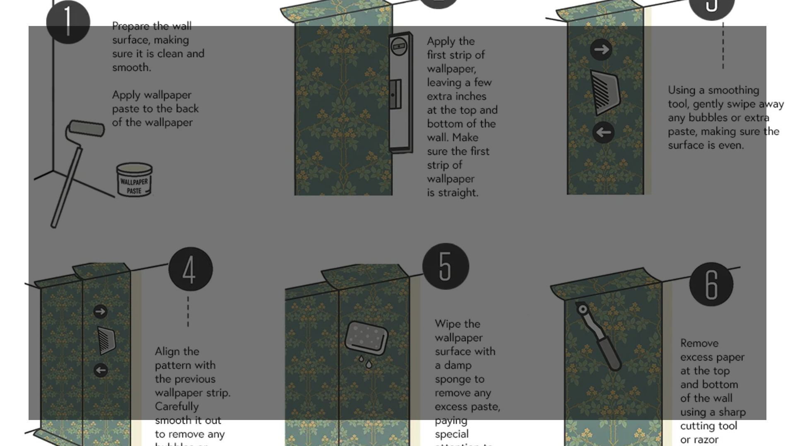

Instrucciones

¿Qué es la Trama Instruccional?
La trama instruccional es una forma de organización textual cuyo objetivo principal es guiar al lector en la realización de una acción o procedimiento determinado. Se encuentra en textos cuyo fin es enseñar a hacer algo de manera precisa y ordenada, como manuales de uso, recetas, instrucciones de seguridad, prospectos médicos, guías de armado o protocolos. A diferencia de otras tramas como la narrativa o la argumentativa, la instruccional no busca contar una historia ni persuadir, sino brindar indicaciones claras para ejecutar correctamente una tarea concreta.
Este tipo de trama se caracteriza por su claridad, secuencia lógica y lenguaje directo. Suele emplear formas verbales en modo imperativo —por ejemplo, "mezcle", "coloque", "encienda" —o en infinitivo— "mezclar", "colocar", "encender"—, dirigidas directamente al lector como destinatario de la acción. La organización de los pasos responde a un orden temporal y lógico: las instrucciones se presentan de manera progresiva, de modo que el cumplimiento de cada paso permita avanzar hacia el siguiente sin dificultad.
En los textos con trama instruccional es común que se presente primero una breve introducción que explica el propósito de la actividad, seguida de una lista de materiales, herramientas o ingredientes necesarios para su realización. Luego, el cuerpo del texto detalla el procedimiento paso a paso, a menudo acompañado de elementos gráficos, como imágenes, esquemas o diagramas, que refuerzan la comprensión visual del proceso.
La eficacia de una trama instruccional reside en su precisión: no debe haber ambigüedades ni omisiones, ya que el lector depende completamente de esas instrucciones para ejecutar correctamente la tarea. Por ello, el lenguaje empleado debe ser técnico cuando corresponde, pero siempre claro y accesible para el público al que va dirigido.
En síntesis, la trama instruccional es una modalidad discursiva funcional que organiza la información con un fin práctico y operativo. Su propósito no es emocionar, narrar o argumentar, sino facilitar la acción informada y eficaz del lector en contextos cotidianos, técnicos o educativos.